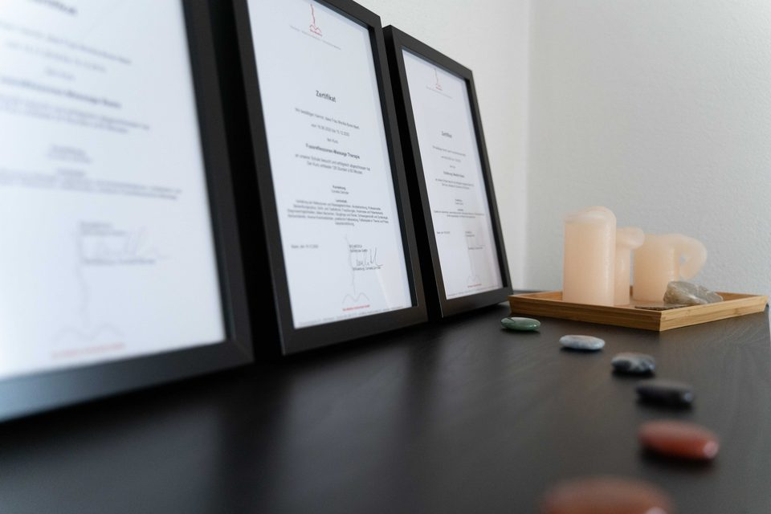

Zu meiner Person
Grüezi, ich bin Monika
Geboren und aufgewachsen in Breitenbach im schönen Schwarzbubenland, habe ich nach meiner Schulzeit eine Lehre als Sattlerin absolviert. Die Faszination für den Menschen und seine persönliche Geschichte hat mich schon seit jeher begleitet.
Nach vielen bereichernden Jahren als Familienfrau mit vier Kindern habe ich mich entschieden, meiner Leidenschaft zu folgen und die Ausbildung zur dipl. Fussreflexzonentherapeutin zu machen. Heute darf ich meine Freude und mein Wissen in meiner eigenen Praxis weitergeben – ein Ort zum Ankommen, Wohlfühlen und Auftanken.
Termin anfragen
2019 – 2023
Ausbildungen & Weiterbildungen
-
2019
- Hot Stone Massage
- Fussreflexzonen Massage Basis
-
2020
- Westliche Medizin · 160 Stunden
- Fussreflexzonen Therapie · 126 Stunden
- Ernährung
-
2021
- Praxismanagement
- Gesundheit & Ethik
- Fussreflexzonen TCM 1
-
2022
- Ohrakupressur / Ohrakupunktur
- Reflektorische Lymphbehandlung
- Patientensicherheit · 28 Stunden
-
2023
- Körperreflexzonen BGM
- Hand- und Schädelreflexzonen

Geplant 2026
- Nervenreflexzonen
- Fussreflexzonen TCM 2
Lernen wir uns kennen
Rufen Sie an oder schreiben Sie mir — ich melde mich für einen Termin bei Ihnen zurück.